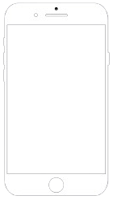

Guilherme Da Silva Mariano
Técnico Em TI
CONTATO
+55 (83) 99176-2095
0072gui@gmail.com
Rua José Expedito Rolim de Andrade, 04, Pio-X, Cajazeiras-PB
HOBBIES
Pintura
Música
Filmes
Informações Complementares
Brasileiro, nascido em 15 de agosto 2006, na cidade de Cajazeiras-PB
Formado em mini curso de redes de computadores
Atencioso a solução de problemas
Bom desempenho no trabalho em equipe
Formação Acadêmica
(2013-2021) - Ensino Fundamental completo
(2022-2024) - Ensino Médio pelo IFPB (em andamento)
(2022-2024) - Ensino Técnico em Informática pelo IPFB (em andamento)
Experiência Profissional
Garçom - (2017-Atual)
Entrega da conta aos clientes recebendo o pagamento em Dinheiro ou Pix, conferindo os valores finais.
Atendimento direto ao cliente para servir alimentos e bebidas, oferecendo os utensílios necessários.
Manutenção da limpeza e organização do bar.
Ministrante - (2022-2023)
Explicação da utilização de software para desenvolvimento 3D.
Criação de modelos 3D para impressão.
Habilidades
Programação em Python
Códigos HTML + CSS
Pontualidade
Aprendizagem rápida
Idioma
| Língua | Leitura | Pronúncia | Escrita |
|---|---|---|---|
| Português | Avançado | Avançado | Avançado |
| Inglês | Básico | Básico | Básico |
| Espanhol | Intermediário | Básico | Básico |